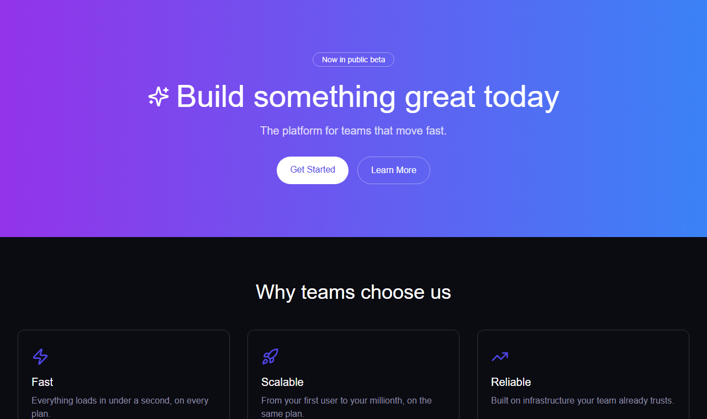
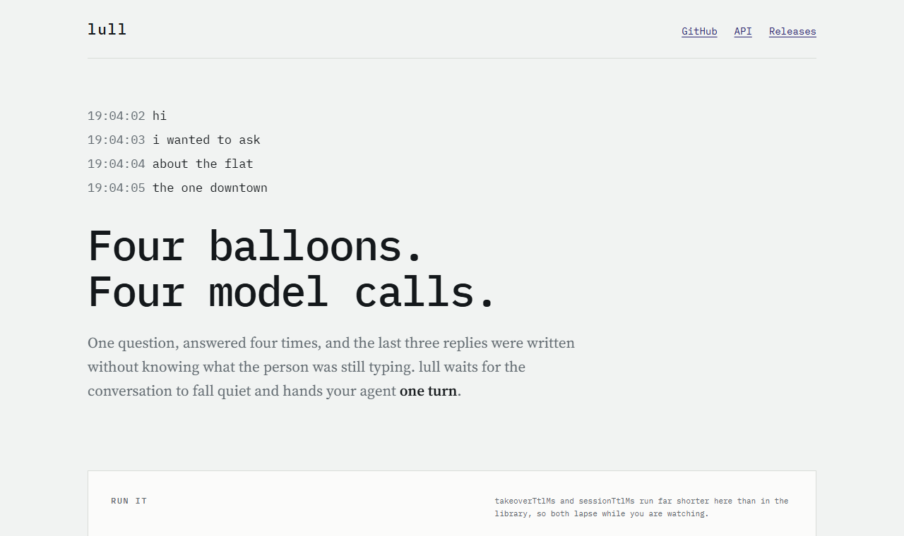

It has no list of banned patterns
Forbid the purple gradient and the generic reappears wherever the list does not reach. A finding here is two things at once: the pattern is present, and there is no evidence anyone chose it. Neither half alone is a finding.
So the auditor looks for the choosing first — a variables file, a
:root block, a theme config, a comment sitting beside the
value it governs. Where it finds one, the pattern is somebody's decision
and the report says nothing about it.
Two landing pages. Only one was decided.
On the left, a calibration fixture: the palette, icon, headline and three identical cards are whatever the scaffold produced. On the right, the public page for lull, another open-source project. It starts with the exact failure the library handles, then lets the reader drive the same reducer the package ships.


What a run gives you back
A verdict in plain words, then a ranked list. ROOT holds the findings that close others when you fix them; THEN holds the rest. One row, one id, one place to open.
| id | what is missing | where |
|---|---|---|
| ROOT | ||
| A1 | The theme picks no colour, no radius and no type scale | tailwind.config.ts:5 |
| A10 | The card's classes retyped by hand instead of reused | components/stat-card.tsx:3 |
| THEN | ||
| F1 | The page never says what language it is in | app/layout.tsx:7 |
| F11 | Rows built from a list with nothing to tell them apart | components/table.tsx:17 |
| W3 | The empty table reports a count instead of offering a first step | components/table.tsx:13 |
Five real findings, each checked against
fixtures/slop-dashboard on 2026-08-18. The two under ROOT
are there because the same evidence produces four more: the empty theme
is also why A3 and A5 fire, and the retyped card is also why A4 and A6
do. Two files close six findings. Twenty-one blind reports are committed
under calibration/, written by agents that were given the
skill and the directory and nothing else.
Two skills, and they are one loop
anti-slop:audit
Reads what already exists. Run it on the whole project or on one file, and on all five axes or on one of them. It reads any web stack: 39 of the 49 tells never name a framework, a build tool or a library.
anti-slop:build
Runs before the components exist. It makes you answer four things the auditor cannot answer for you — what the product concretely is, how it talks, how sober it should look, how much belongs on one screen — and writes every value it derives with the reasoning beside it, in the places the auditor searches for evidence.
Which is how each half tests the other: a tell that fires on a tree the build skill produced is the build skill's failure, and it arrives with a file and a line.